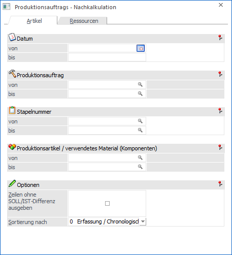

Im Menüpunkt
1 WinLine PPS
1 Auswertungen
1 Produktionsauftrag - Nachkalkulation
kann eine Differenzliste ausgegeben werden, welche die Differenz zwischen den Soll- und Istwerten berechnet und anzeigt. Die Liste kann wahlweise aufgrund der Artikel oder der Ressourcen ausgegeben werden.
Das Fenster ist in die folgenden Register unterteilt, welche in den nachfolgenden Kapiteln detailliert beschrieben werden:
ü Register "Artikel"
In diesem
Register kann eine Liste ausgegeben werden, auf welcher die Differenzen zwischen
den SOLL- und den IST-Mengen der Produktionsaufträge ersichtlich sind.
ü Register "Ressourcen"
In diesem
Register kann eine Liste ausgegeben werden, auf welcher die Differenzen zwischen
den SOLL- und den IST-Werten der Ressourcen ersichtlich sind (Zeiten und
Kosten).

Buttons

Ø Ausgabe Bildschirm
Mit Hilfe des Buttons "Ausgabe Bildschirm" oder der Taste F5 wird die Nachkalkulation am Bildschirm ausgegeben.
Ø Ausgabe Drucker
Durch Anwahl des Buttons "Ausgabe Drucker" wird die Nachkalkulation am Drucker ausgegeben.
Ø Ende
Durch Anwahl des Buttons "Ende" bzw. der Taste ESC wird das Fenster geschlossen.